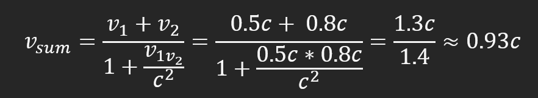

Special Theory of Relativity
In order to have a complete description of the
motion, we must specify how the body alters its
position with time; i.e. for every point on the
trajectory it must be stated at what time the
body is situated there.
(Albert Einstein, "On the Electrodynamics of Moving Bodies")
The special theory of relativity is based on two postulates.
- The principle of relativity
- The speed of light is invariant
The principle of relativity
To visualize the concept of an inertial frame of reference, Einstein uses the thought experiment of sitting on a train. When sitting in a train in motion, everything inside will appear to a person inside as stationary, as the observer and the train are moving at the same speed. The outside world seems to be moving. What happens when you throw a ball straight into the air while being at a constant speed on that train? It will not behave any differently than standing still at the train station.
Invariance of the speed of light
Before Einstein, there was a hypothesis on how light moves through the air called the Ether Hypothesis. It was believed that light waves travel through a medium called ether, like water waves, and sound waves need a medium to get transmitted. This theory got disproved with the Michelson-Morley Interferometer. This interferometer compares the optical path length for light moving in perpendicular directions. If there were a medium for light, the length of these paths would be different, which would have resulted in a different interference pattern than observed. Therefore is, the speed of light constant, and there is no light ether.

Consequences
The truth of both these postulates leads to some consequences:
Simultaneity
If two spatial separated events occur at the same time depends on the observer's frame of reference.

Time dilation
Time observed by a moving observer will be slower than by a stationary one.
This effect was also measured in an experiment. One atomic clock was stationary on earth; the other was flown at high speeds in a plane. The clock on the plane moved slower than the one on earth.
Learn more about the Twin paradox
Length contraction
Similar to time dilation, an object in motion will appear shorted in the direction of movement. Both of these effects can be calculated with the Lorentz transformation. Where L ̃ is the length of an object as a function with the velocity v. L_0 is the length of an object at rest, and c is the speed of light.
This calculation only becomes only important when the velocity is high. For example, adding v1 = 0.5c and v2 = 0.8c (when they are parallel) is impossible because nothing can be faster than the speed of light.
Calculating the total speed with a relativistic approach leads to a different result.
We can use a modified version of this formula to show why moving at the speed of light is impossible or at least very difficult.
With
we can calculate how much energy is needed to move at the speed of light. v -> c
Infinite energy is needed to move at the speed of light.